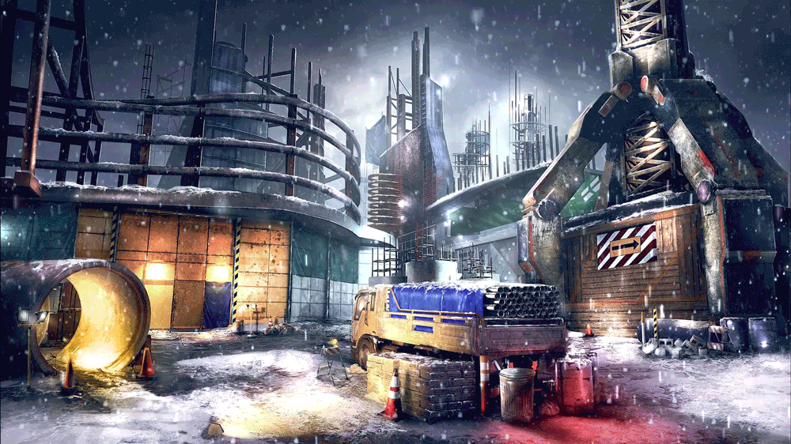
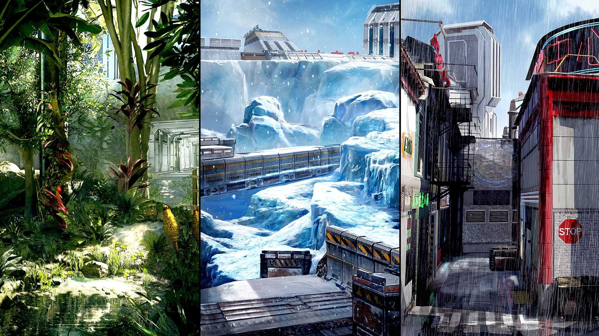

The maps
-
Gauntlet: Grounded in a military training facility, Gauntlet plays up the core philosophy of Treyarch's classic three lane map structure with distinct variety in visuals and gameplay. Each of the three primary lanes has a unique environment as players battle through a sprawling jungle, sub-zero artic zone and rainy urban cityscape.
-
Splash: Set in an abandoned water theme park, this vibrant and playful map delivers an imaginative environment complete with waterslides, a wrecked pirate ship and a lazy river ride that winds through a fantastical forgotten city. Splash is designed to drive an open flow of combat, including plenty of opportunities for underwater gameplay.


-
Rise: Set in the snowy outskirts of Zurich, Rise is a Coalescence Corporation construction project for a massive subterranean research campus. The design of the map caters to a mix of classic Call of Duty cover combat alongside strategic core movement opportunities, with each section of the map offering distinctly different styles of gameplay.
-
Skyjacked: Set on a security VTOL in the clouds over urban Zurich, Skyjacked is a reimagined version of the popular Call of Duty: Black Ops 2 multiplayer map Hijacked, and retains the same fast and frenetic gameplay from one of the most popular maps in Call of Duty history, but with a twist. Skyjacked gives players the opportunity to explore the map in a variety of new ways thanks to the all-new core movement system in Black Ops 3.